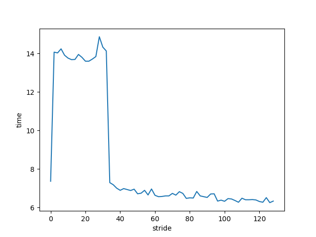

GCC Prefetch
Table of Contents
1. GCC Prefetch
当 backend 支持特定的 prefetch 指令时, gcc 可以通过 pass_loop_prefetch 自动 prefetch 或通过 __builtin_prefetch 进行手动 pretch.
1.1. bisect 测试
为了测试 prefetch 指令对性能的影响, 需要设计一个 `cache 不友好` 的测试代码, 以便减小编译器的 insn schedule, 硬件的 out-of-order 以及硬件的 prefetch 等对结果造成的影响. 例如为了减少硬件 prefetch 的影响, 需要避免在代码中顺序访问内存.
二分查找 (bisect) 是一个比较合适的测试程序
https://stackoverflow.com/questions/7327994/prefetching-examples
#include <stdio.h> #include <stdlib.h> #include <time.h> int bisect(int *d, int N, int key) { int lo = 0; int hi = N; int mid = 0; while (lo < hi) { mid = (lo + hi) / 2; #ifdef DO_PREFETCH __builtin_prefetch(&d[(mid + 1 + hi) / 2], 0, 1); __builtin_prefetch(&d[(lo + mid) / 2], 0, 1); #endif if (d[mid] == key) { return mid; } if (d[mid] < key) { lo = mid + 1; } else { hi = mid; } } return -1; } int main() { int N = 1024 * 1024 * 512; int *data = malloc(N * sizeof(int)); for (int i = 0; i < N; i++) { data[i] = i; } int N_LOOKUPS = 1024 * 1024 * 8; srand(0); int *lookups = malloc(N_LOOKUPS * sizeof(int)); for (int i = 0; i < N_LOOKUPS; i++) { lookups[i] = rand() % N; } for (int i = 0; i < N_LOOKUPS; i++) { bisect(data, N, lookups[i]); } free(data); free(lookups); }
在 `Intel(R) Core(TM) i5-10210U CPU @ 1.60GHz` 上测试结果为:
$> gcc prefetch.c -DDO_PREFETCH -o with-prefetch -std=c11 -O3
$> gcc prefetch.c -o no-prefetch -std=c11 -O3
$> perf stat -e branch-misses,branches,L1-dcache-load-misses,L1-dcache-loads ./with-prefetch
Performance counter stats for './with-prefetch':
5,821,103 branch-misses # 0.51% of all branches (74.99%)
1,149,572,392 branches (74.99%)
522,814,225 L1-dcache-load-misses # 35.37% of all L1-dcache accesses (75.03%)
1,478,028,379 L1-dcache-loads (75.00%)
8.620298468 seconds time elapsed
8.103417000 seconds user
0.515962000 seconds sys
$> perf stat -e branch-misses,branches,L1-dcache-load-misses,L1-dcache-loads ./no-prefetch
Performance counter stats for './no-prefetch':
120,983,504 branch-misses # 8.11% of all branches (74.99%)
1,491,848,299 branches (75.00%)
1,119,953,933 L1-dcache-load-misses # 110.77% of all L1-dcache accesses (75.02%)
1,011,023,655 L1-dcache-loads (74.99%)
13.078209613 seconds time elapsed
12.611553000 seconds user
0.463983000 seconds sys
可见 L1-dcache-load-misses 在 with-prefetch 时比 no-prefetch 要小.
比较奇怪的是 branch-misses 的数据:
由于 N_LOOKUPS 为 8M, N 为 512M, 所以 bisect 总的循环次数应该是 \(8M*log_2(512M)=200M\), 这个数据和 no-prefetch 的 branch-misses 基本是一致的 (每次循环都有 50% 的概率猜错 `d[mid]<key`), 但 with-prefetch 的 branmch-misses 为什么这么低?
1.2. linear search 测试
由于 linear search 程序有明显的顺序访问内存的 pattern, 这里测试一下 `硬件 prefetch` 和 `gcc 自动 prefetch` 是否有较好的性能.
#include <stdint.h> #include <stdio.h> #include <stdlib.h> #include <time.h> #ifndef STRIDE #define STRIDE 64 #endif int linear_search(int *d, int N, int key) { for (int i = 0; i < N; i++) { #ifdef DO_PREFETCH __builtin_prefetch(&d[i + STRIDE], 0, 1); #endif if (d[i] == key) { return i; } } return -1; } int main() { int N = 1024 * 1024 * 64; int *data = malloc(N * sizeof(int)); for (int i = 0; i < N; i++) { data[i] = i; } int N_LOOKUPS = 512; srand(0); int *lookups = malloc(N_LOOKUPS * sizeof(int)); for (int i = 0; i < N_LOOKUPS; i++) { lookups[i] = rand() % N; } int64_t total = 0; for (int i = 0; i < N_LOOKUPS; i++) { total += linear_search(data, N, lookups[i]); } free(data); free(lookups); printf("%ld\n", total); }
$> gcc prefetch.c -o no-prefetch -O2 $> /usr/bin/time -f "%e" ./no-prefetch 8.49 $> gcc prefetch.c -o auto-prefetch -O2 -fprefetch-loop-arrays $> /usr/bin/time -f "%e" ./auto-prefetch 11.56 $> gcc prefetch.c -DDO_PREFETCH -o with-prefetch -O2 $> /usr/bin/time -f "%e" ./with-prefetch 6.52
看起来和 `手动 prefetch` 相比, `gcc 自动 prefetch` 和 `硬件自动 prefetch` 都不太行, 即使测试程序有明显的顺序访问内存的 pattern.
然后再对比一下 STRIDE 对手工 prefetch 的影响:

怎么解释 2~32 这一段异常的数据?
1.3. 总结
- gcc 的自动 prefetch 看起来不太行
- 相对于依赖硬件 prefetch, 软件使用 prefetch 指令可以有效的提高性能
- 不当的使用 prefetch 指令会降低性能
Backlinks
GCC Backend (GCC Backend > misc > target hook): - 后端是否支持某种指令 (例如 pass_loop_prefetch 优化依赖 TARGET_HAVE_PREFETCH 这 个 target macro 决定是否进行 prefetch)